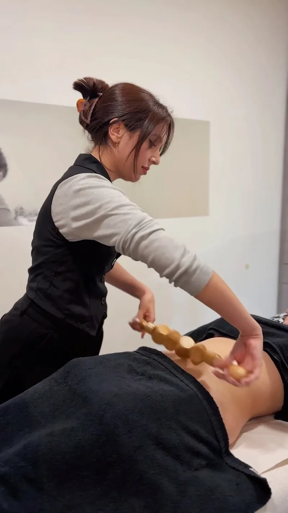
01Corporales
Maderoterapia
Una técnica milenaria y no invasiva que con herramientas de madera adaptadas a cada curva activa la circulación, combate la celulitis y moldea la figura de forma natural.
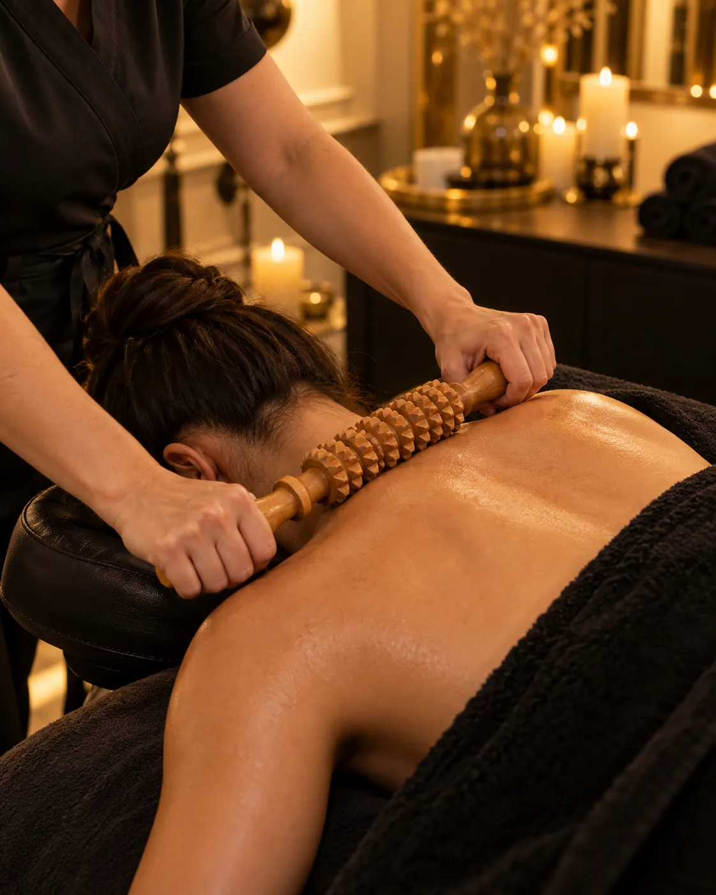
Rocío Castelló · Santomera y Murcia04Tratamientos corporales
Combinamos técnicas manuales y aparatología para remodelar, reafirmar y drenar. Primero entendemos tu cuerpo, tus metas y tus preocupaciones; después diseñamos un plan con resultados visibles y duraderos.
Corporales · Rocío Castelló
El cuidado del cuerpo no es sólo estética: es salud, energía y equilibrio. Mientras muchos centros ofrecen tratamientos estándar, nosotras nos sumergimos en comprender tu cuerpo, tus metas y tus preocupaciones para diseñar un plan que dé resultados visibles y duraderos.
Combinamos técnicas manuales como la maderoterapia o el lipodrenaje brasileño con tecnología como Zionic, ondas de choque o cavitación. Y te acompañamos sesión a sesión, con mediciones y fotografías para que veas tu evolución.
Los cuerpos de verano se trabajan en invierno.

01Corporales
Una técnica milenaria y no invasiva que con herramientas de madera adaptadas a cada curva activa la circulación, combate la celulitis y moldea la figura de forma natural.
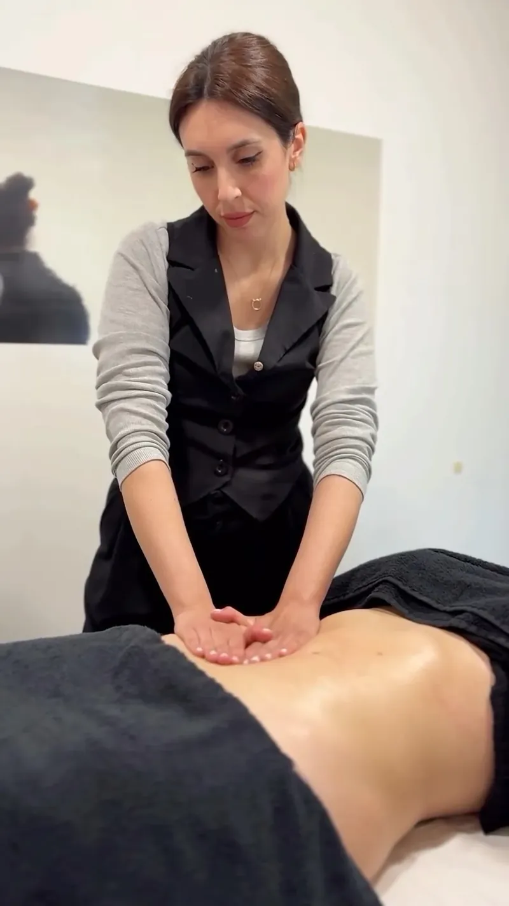
02Corporales
Mucho más que un masaje: combina técnicas de drenaje y modelado para reducir la retención de líquidos, esculpir la figura y lograr un efecto tensor inmediato.
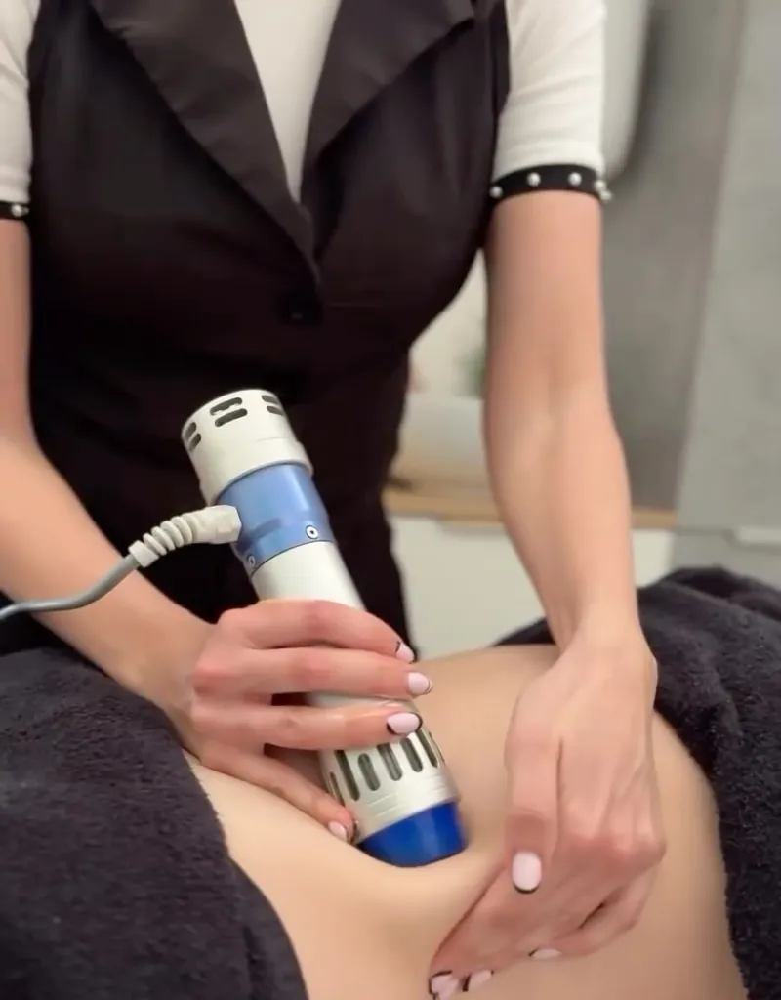
03Corporales
Pulsos acústicos que transforman la estructura del tejido: tratan la celulitis rebelde, mejoran la firmeza y optimizan la circulación.
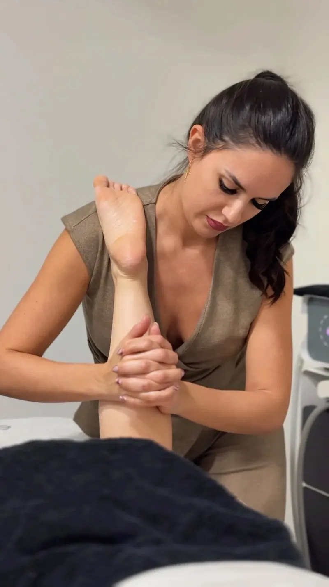
04Corporales
Drenaje linfático mecánico para decir adiós a la hinchazón y a la sensación de piernas cansadas. El complemento perfecto de cualquier protocolo.
Carta de tratamientos
13 tratamientos · qué son, para quién y qué vas a notar.
Radiofrecuencia y masaje activo rotacional. Elimina depósitos de grasa, mejora la celulitis, reafirma y drena. Protocolo recomendado de 6 sesiones.
Grasa localizada, celulitis, flacidez y glúteos
Técnica milenaria con herramientas de madera adaptadas a cada curva. Activa la circulación, rompe la celulitis y moldea.
Celulitis, retención y remodelación
Masaje intenso que combina drenaje y modelado. Reduce la retención de líquidos y da un efecto tensor inmediato.
Retención de líquidos e hinchazón
Pulsos acústicos que transforman la estructura de la celulitis y mejoran la firmeza y la circulación.
Celulitis rebelde
Ultrasonidos que convierten la grasa en una sustancia líquida que el cuerpo elimina de forma natural. Alternativa no quirúrgica.
Grasa localizada
Calor profundo que estimula colágeno y elastina para una piel firme y elástica.
Flacidez en abdomen, brazos o muslos
Electromagnetismo que genera miles de contracciones musculares para tonificar y definir sin esfuerzo.
Abdomen y glúteos sin tono
Ventosas y succión controlada que oxigenan los tejidos, combaten la celulitis y favorecen el drenaje.
Celulitis y piernas pesadas
Terapia con metales que equilibra la energía, desintoxica y aporta un efecto rejuvenecedor a la piel.
Quien busca un enfoque holístico
Mascarillas corporales con ingredientes nutritivos y regenerativos que desintoxican e hidratan.
Piel seca o apagada
Tratamiento 100 % manual en 4 fases: desintoxicación de choque, activación de la lipólisis, termogénesis y remodelación.
Reducir volumen de forma progresiva
Drenaje linfático mecánico o manual para eliminar líquidos y aliviar las piernas.
Retención y piernas cansadas
Protocolo combinado para flacidez, diástasis y cicatriz de cesárea, con delicadeza y paciencia.
Mamás que quieren recuperar su abdomen
Antes y después
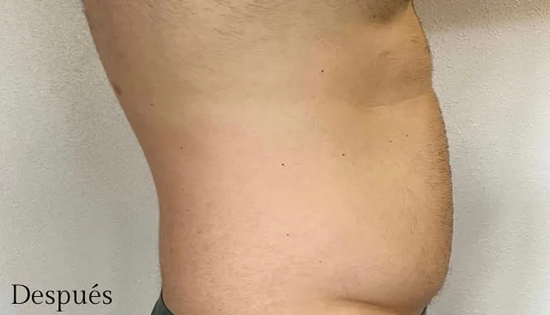
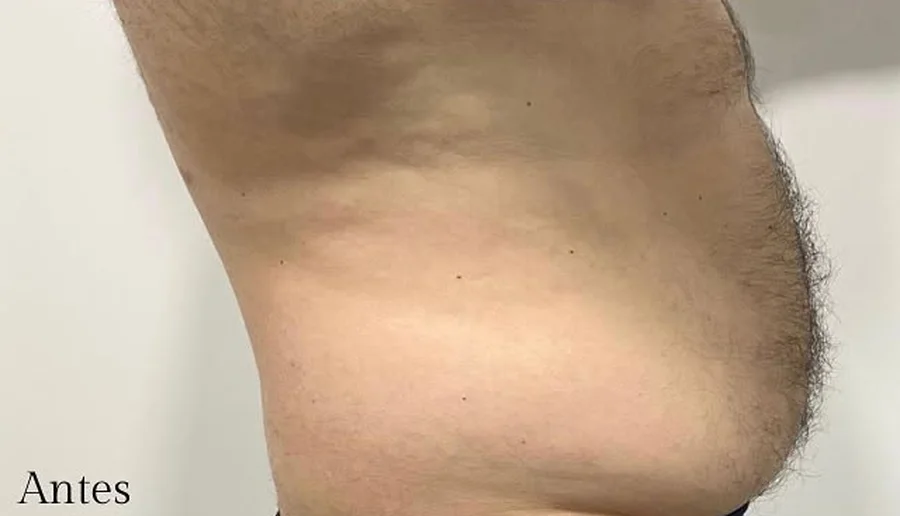

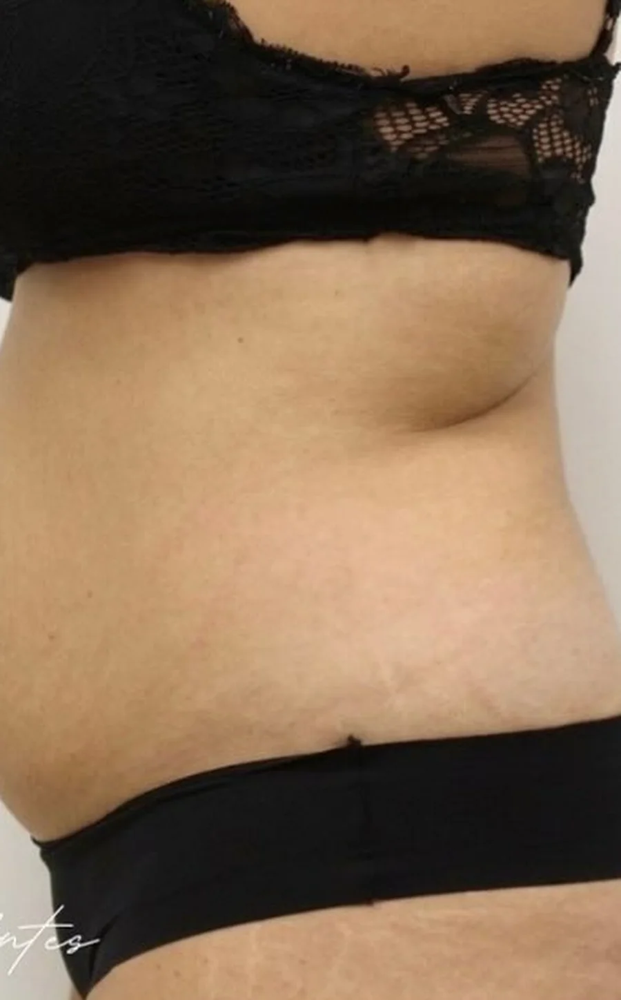
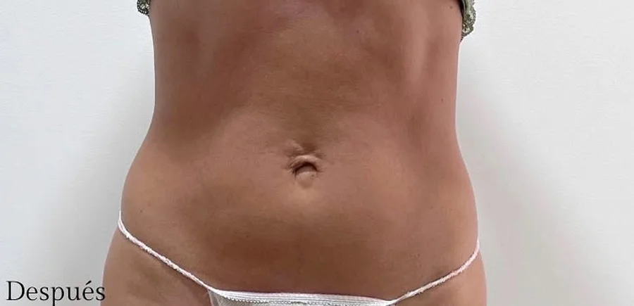
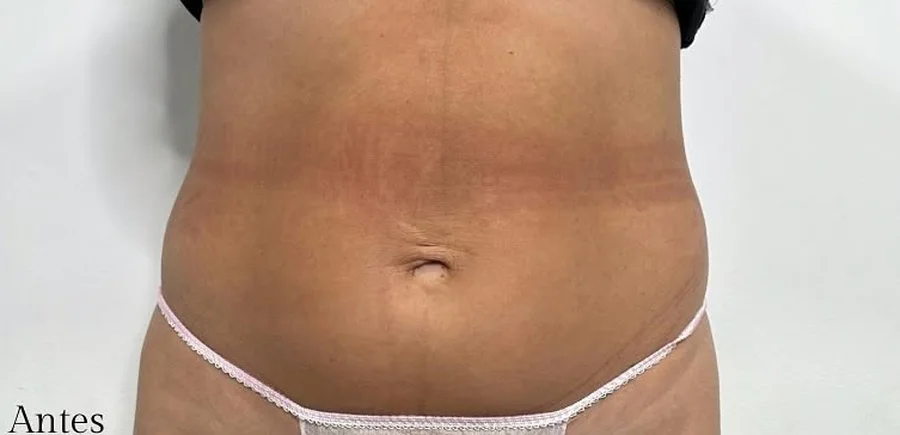

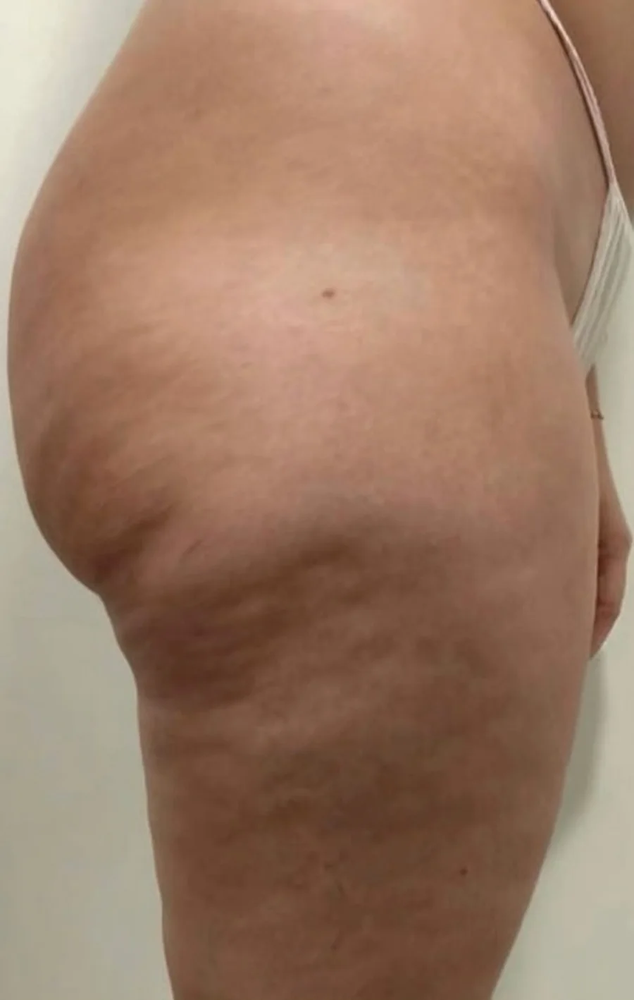
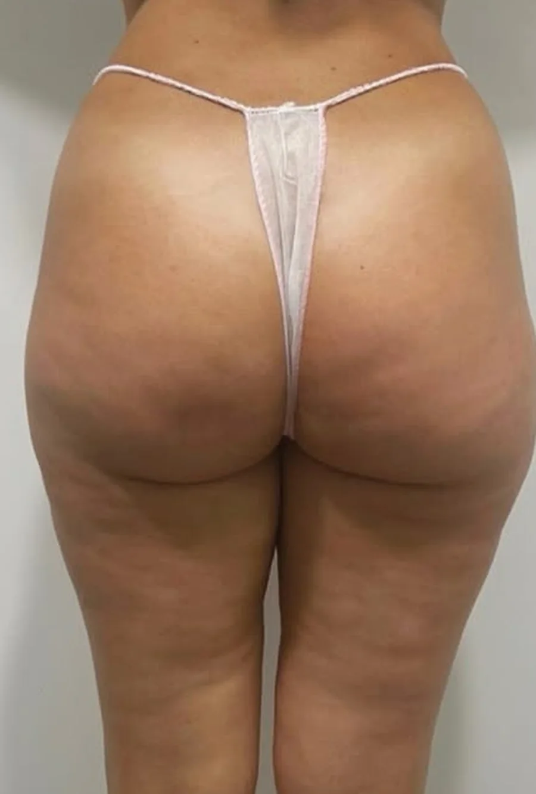
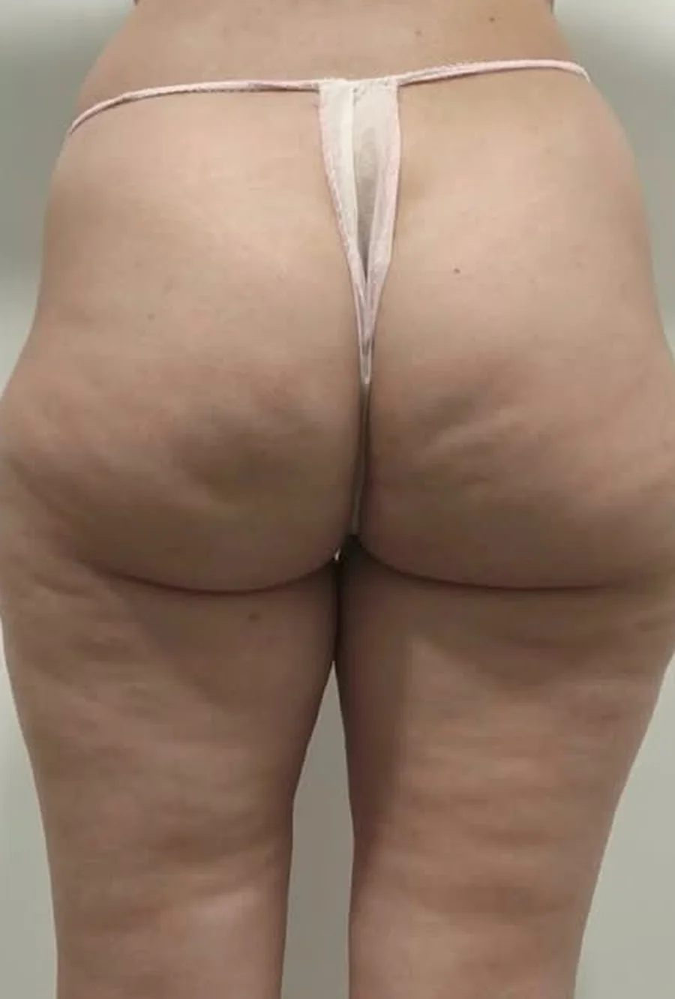
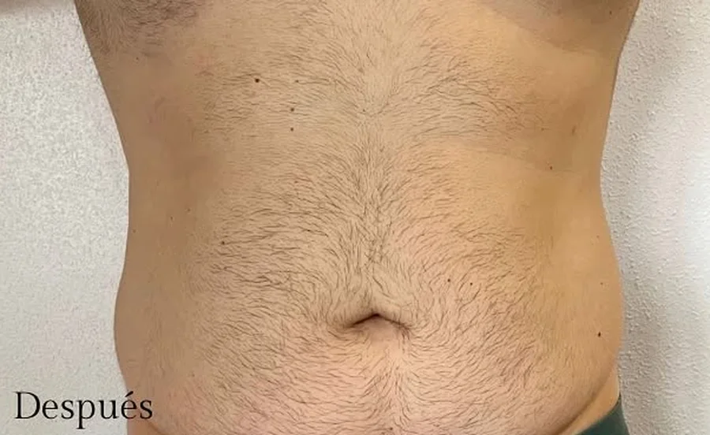
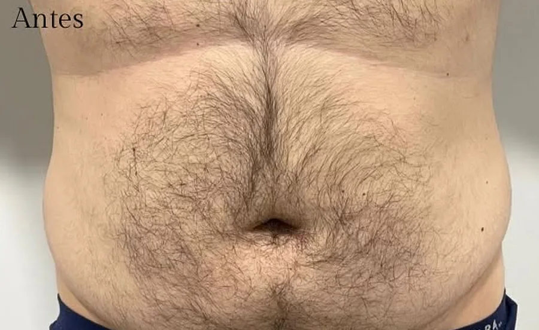
Paso a paso
Medimos, fotografiamos y escuchamos tu objetivo.
Combinamos técnicas manuales y aparatología según tu caso.
Cómodas y sin tiempo de recuperación, con seguimiento en cada visita.
Comparamos medidas y fotos para que veas el cambio real.
Antes y después de tu cita
Galería real
Fotos reales de nuestros centros y clientas.
Míralo en movimiento
Grabado en nuestras cabinas, con nuestras clientas. Así trabajamos cada día: sin filtros, con mimo y técnica.
Ver más en InstagramTarifas
Precios por sesión con IVA incluido. Pregúntanos por bonos y promociones de temporada.
Todas las tarifasDudas frecuentes
No hay uno mágico: el secreto está en combinar. Solemos unir Zionic o cavitación con maderoterapia y presoterapia según tu caso.
Los cuerpos de verano se trabajan en invierno. Cuanto antes empieces, mejores resultados tendrás cuando llegue el buen tiempo.
Sí. Tratamos flacidez, diástasis y cicatriz de cesárea con protocolos específicos y mucha delicadeza.
Sigue descubriendo
Síguenos
Resultados reales, novedades, promociones de temporada y el día a día de nuestro equipo. Más de 16 mil personas ya nos siguen.

ROCIO CASTELLÓ ESTÉTICA · Salón de belleza
✨ C/ de la Gloria 20, Santomera · 669 024 902
✨ Av. Libertad 7, Barrio del Progreso · 623 510 014